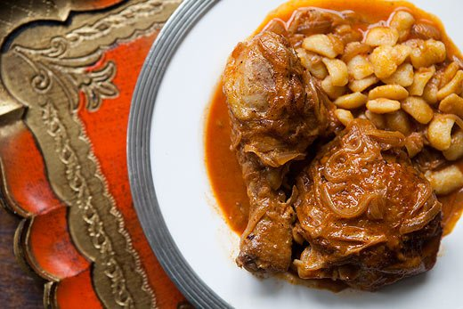

Chicken Paprikash

Back
Ingredients
- 2 to 2 1/2 pounds of chicken pieces, preferably thighs and legs
- Salt
- 2-3 Tbsp unsalted butter
- 2 pounds yellow onions, (about 2-3 large onions)
- Black pepper to taste
- 2 Tbsp sweet paprika, preferably Hungarian
- 1 teaspoon (or to taste), hot paprika or cayenne
- 1 cup chicken broth
- 1/2 cup sour cream
Method
- Salt the chicken pieces well and let them sit at room temperature while you cut the onions. Slice the onions lengthwise (top to root).
- Heat a large sauté pan over medium-high heat and melt the butter. When the butter is hot, pat the chicken pieces dry with paper towels and place them skin-side down in the pan. Let the chicken pieces cook 4-5 minutes on one side, until well browned, then turn them over and let them cook 2-3 minutes on the other side. (Take care when turning so as not to tear the skin if any is sticking to the pan.) Remove the chicken from the pan to a bowl, set aside.
- Add the sliced onions to the sauté pan and cook them, stirring occasionally, scraping up the browned bits from the chicken, until lightly browned, about 7 minutes.
- Add the paprika and some black pepper to the onions and stir to combine. Add the chicken broth, again scraping up the browned bits from the bottom of the pan, and then nestle the chicken pieces into the pan, on top of the onions. Cover and cook on a low simmer for 20-25 minutes (depending on the size of your chicken pieces). When the chicken is cooked through (at least 165° if you use a thermometer, or if the juices run clear, not pink when the thickest part of the thigh is pierced with a knife) remove the pan from the heat. (If you want, you can also keep cooking the chicken until it begins to fall off the bone, which may take another 30 minutes or so.)
- When the chicken is done to your taste, remove the chicken from the pan. Allow the pan to cool for a minute and then slowly stir in the sour cream and add salt to taste. If the sour cream cools the sauce too much, turn the heat back on just enough to warm it through. Add the chicken back to the pan and coat with the sauce.